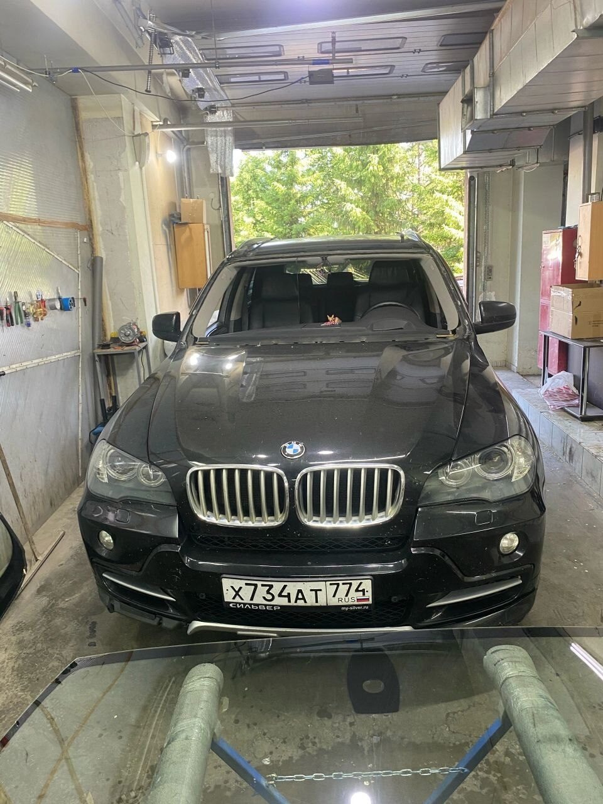
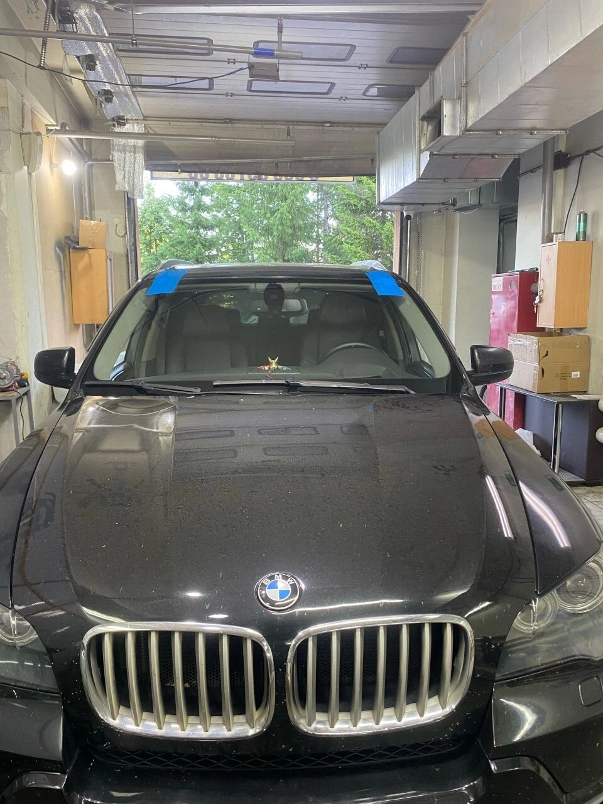
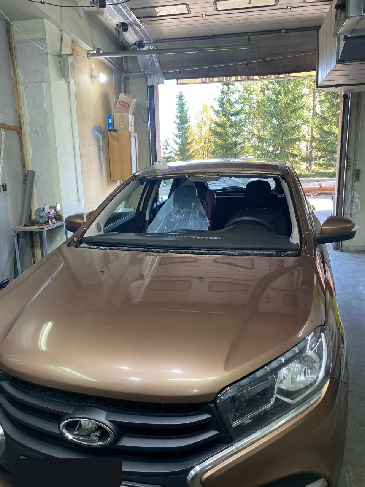
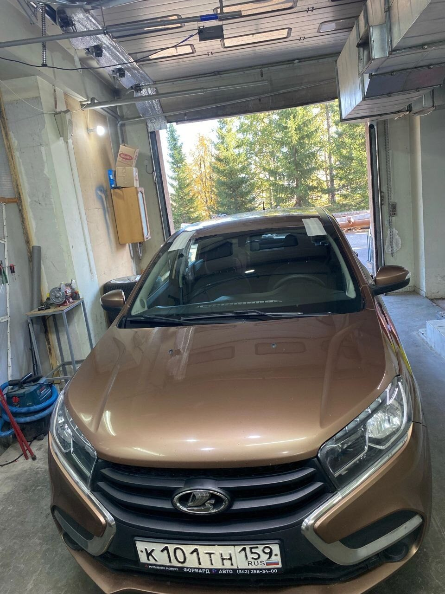
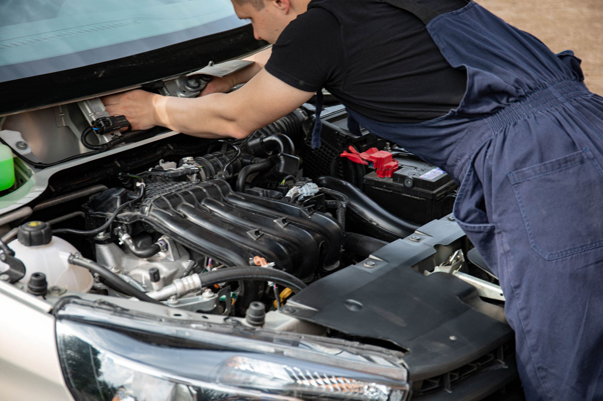

Приехали из Челябинска в Магнитогорск в гости. В дороге получил скол. Сделали быстро и качественно. Очень понравилось. Ещё и в воскресенье работали. Рекомендую.
Автостёкла в Магнитогорске · Набережная, 9 · у «Водопада Чудес»
Скол уберём за полчаса. Лобовое поменяем за два часа.
Автостёкла — наша специализация: замена, ремонт сколов и трещин, полировка фар. Стекло подберём под марку, датчики и камеры — привезём, вклеим и дадим год гарантии на работу.
Сейчас открыто — до 22:00
Пн–вс, 8:30–22:00 — без выходных
Рейтинг на 2ГИС — 5,0 из 5 · 46 оценок
Осмотр и оценка — 0 ₽
Гарантия на работу — 1 год
Что делаем
Подробнее об услугах
Четыре вещи, которые мы делаем хорошо
01
Замена лобового стекла
Подбираем стекло под марку, датчик дождя и камеры. Вклеиваем на профессиональный полиуретан — герметично и без скрипов.
работа от 3 000 ₽стекло — по каталогу 02Ремонт сколов и трещин
Заполняем скол оптическим полимером и останавливаем трещину, пока она не поползла через всё стекло.
от 800 ₽30–60 минут 03Боковые и задние стёкла
Аккуратно разбираем дверь, убираем осколки из механизмов, ставим и регулируем новое стекло.
работа от 2 000 ₽1–2 часа 04Полировка фар
Снимаем мутный слой и возвращаем фарам прозрачность — свет становится заметно ярче и ровнее.
от 1 500 ₽за пару, ≈1 час
Живая линия
Что о нас пишут
Мастер своего дела, рекомендую. Обращался по поводу трещины на лобовом и полировки фар — результат супер.
Менял сразу два стекла на РАВ 4 — сделали всё отлично, быстро и качественно, цена дешевле, чем у конкурентов. Да, ещё фары отполировать — тоже огонь! Одним словом, рекомендую!
Установили стекло очень быстро и качественно, ещё и гарантию на работу дали — год. Спасибо!
Работают профессионалы. В сервисе чисто, персонал вежливый. Рекомендую.
Быстро подобрали замену и качественно всё сделали. Скорость, качество и адекватная цена — редкое сочетание.
Уже были у нас? Оцените работу
Это займёт десять секунд. Если что-то не так — владелец узнает первым и всё исправит.
Нажмите на звезду
Спасибо! Расскажите об этом в 2ГИС — для нас это лучшая благодарность.
Жаль, что не на пять. Напишите владельцу напрямую — разберёмся и исправим.
Почему к нам
Коротко, в цифрах
2 часа
обычно занимает замена лобового стекла — вместе с подготовкой
1 год
гарантии на работу: герметичность и вклейку — без разговоров
5,0
рейтинг на 2ГИС по 46 оценкам — читайте, нам не стыдно
13,5 ч
в день принимаем машины: с 8:30 до 22:00, без выходных
Как проходит замена
От звонка до выдачи ключей
Звонок и подбор стекла
Спросим марку, год и что стоит на стекле — датчик дождя, камера, обогрев. Назовём цену и время.
≈ 10 минутДемонтаж и подготовка
Срезаем старое стекло, зачищаем и обезжириваем проём, грунтуем — от этого зависит герметичность.
30–40 минутВклейка нового стекла
Наносим полиуретановый клей, выставляем стекло по меткам, подключаем датчики и молдинги.
≈ 30 минутВыдержка и проверка
Даём клею схватиться, проверяем зазоры и работу датчиков. Говорим, когда можно на мойку.
≈ 1 час
Наши работы
Хочу так же
До и после — без ретуши





Автостёкла в Магнитогорске — коротко о главном
Меняем и ремонтируем автостёкла на легковых автомобилях любых марок — от Lada, Kia, Hyundai и Renault до Toyota, Volkswagen и BMW. Стекло подбираем по марке и комплектации: с датчиком дождя, обогревом или камерой. Замена лобового стекла занимает около двух часов, работа стоит от 3 000 ₽; само стекло — по каталогу, от доступных аналогов до оригинала.
Свежий скол дешевле отремонтировать сразу, чем ждать, пока он поползёт трещиной через всё стекло: ремонт скола — от 800 ₽ и полчаса времени. Разбили боковое? Разберём дверь, вычистим осколки и поставим новое стекло за 1–2 часа. Заодно можно отполировать фары — свет станет заметно ярче.
Приезжайте без записи: мы находимся в Правобережном районе Магнитогорска — Набережная, 9, у ТРК «Водопад Чудес». Работаем каждый день с 8:30 до 22:00, включая праздники. На вклейку и герметичность даём год гарантии, осмотр и оценка повреждений — бесплатно. Рейтинг сервиса на 2ГИС — 5,0 из 5: почитайте отзывы и приезжайте.